an ongoing design exploration into the disappearing cinemas of west bengal
Sourapravo Chatterjee PhD Scholar Department of Design IIT Hyderabad
scroll to enter
project.single_screen
01Prologue
If you want to reach my home, you have to get down at a bus stop called Parijat in Howrah, on the western bank of the Hooghly.1 For someone unfamiliar with the neighbourhood, the name might sound unusual. Parijat was, in fact, a single screen cinema hall that once stood at the heart of this modest locality in the twin city of Calcutta. For me, it is where my everyday life slowly took shape. Parijat was not merely a cinema hall, it was a landmark, a meeting point, and a way of locating oneself within the city. Even after the hall had closed, people continued to say, “Parijat e namiye deben” ( Drop me at Parijat).
When I was growing up, Parijat was already shut. I never bought a ticket or stood in its queue. I only saw it from outside. On my way to school, while returning home, while walking through the area, the building was always there. Closed. Quiet. A little worn down. It stood like a backdrop to my everyday movements. Most of what I know about Parijat Cinema came from listening. My father spoke about it. Elder neighbours spoke about it.2 They spoke of how the hall once looked during show timings, how crowded the area used to be. One story came up again and again. That Uttam Kumar, the matinee idol, once came to Parijat Cinema. That he stood on the balcony and waved at the crowd below. That people remembered the moment clearly, even after so many years.
There were other stories too. Stories of power cuts during screenings. Of people clapping and shouting when the screen went dark. Stories of ticket blackers standing near the gate. Of evenings when the area around Parijat felt alive. In 2024, the hall was demolished, erased from the neighbourhood to make way for a residential complex being developed by a real estate company. That moment stayed with me. It was not only about Parijat. Around the same time, I noticed that other cinema halls were also disappearing. Some were being demolished. Some were being repurposed. Some were simply locked and left to decay. It felt as if an entire layer of everyday life was quietly being erased.
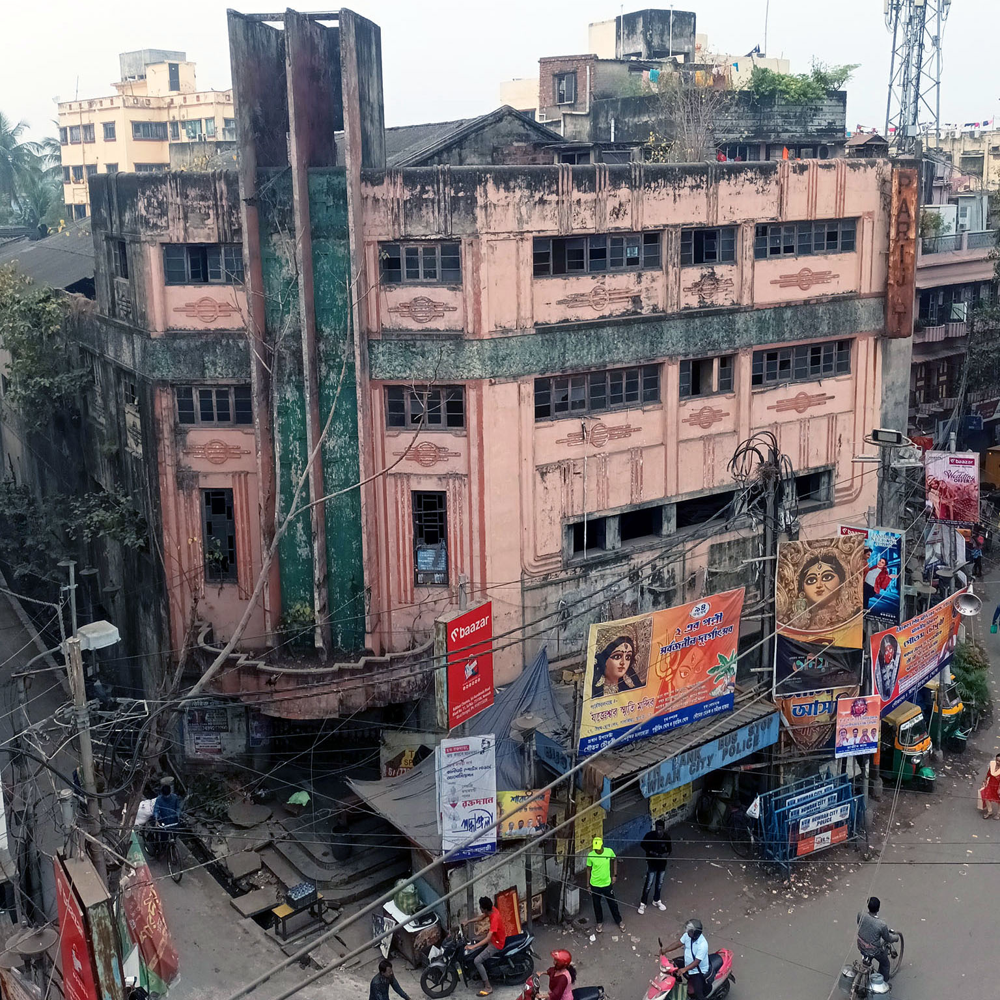
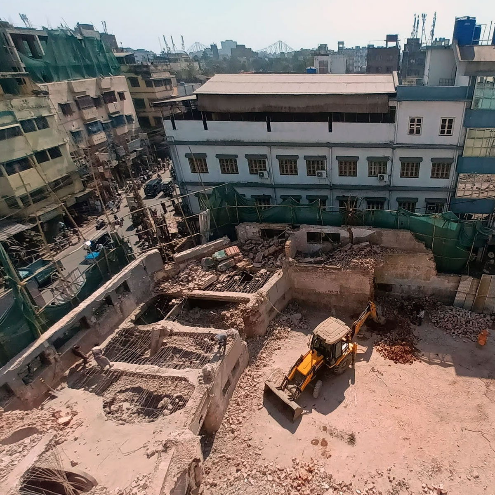
Figure 1Parijat Cinema, closed building.(Photo by author)
Figure 2Demolition at the Parijat Cinema site.(Photo by author, 2024)
I realised that what was disappearing was not only buildings, but also a way of watching films, a way of gathering, a way of spending time together. Cinema halls in these places were not only entertainment spaces. They were social spaces. They shaped daily routines, local economies, and shared experiences. This is where the enquiry began.
I did not begin this work as a trained historian looking for gaps in archives. I began as someone who grew up next to a closed cinema hall. As someone who felt that these stories deserved to be recorded before they disappeared completely. I started visiting cinema halls across Howrah and other district towns. Some were still running. Some were barely surviving. Some had closed long ago. Some existed only as memories tied to bus stops, roads, or local names.
I spoke to people who worked in these halls. I took photographs. I recorded videos. I wrote notes. I followed conversations on social media where people shared old photographs and memories. This project became interesting to me not only because it allowed me to understand my surroundings differently, but it helped me see cinema halls not as isolated buildings, but as part of everyday life. It made me aware of the labour that sustained these spaces, the memories they carried, and the countless experiences, relationships, and emotions that unfolded within and around them.
What follows is not only a study of cinema halls. It is also a record of listening, observing, and returning to places that shaped ordinary lives. Including my own. After three years of documenting, photographing, video recording, and interviewing, there was a handful of documents with me. There were some physical elements too, such as film tickets, posters, and other material objects. This formed the base of my doctoral research at the Department of Design, IIT Hyderabad, where I thought that this could be further developed and expanded into a deeper inquiry and examination.
There were other things too. It was not only about documenting, my formal training in communication, media, and film studies has moved me towards a fondness for other kinds of explorations and iterations with cinema halls as well. Also, not only the single-screens, but also the multiplexes. They are also vanishing nowadays due to the emergence of newer media technologies like OTT and streaming platforms. Whatever has been discussed and ideated along with my supervisor so far is documented in the following sections. Beginning with a foundational history of when cinema came to the Indian subcontinent, particularly to our country, and how it spread across the cities and towns of West Bengal and Calcutta.
However, the study may not remain area-specific or geographically bound to a particular state or district. It can become generic too, but that decision has not yet been made. So, we will proceed with the data we have at present, and we will see how this research finally takes shape, as it is an ongoing and continuous exploration of media culture, memory, and the collective viewing of cinema on screen.
02Going to the Movies
Long before television, video, and digital platforms entered everyday life, cinema halls were the most consistent sites of mass entertainment. They hosted not only films but also habits. Evenings were planned around show timings. Weekends were marked by new releases.
Cinema-going in Bengal was historically a collective experience. The architecture of the single-screen hall encouraged this collectivity. Large auditoriums, fixed seating arrangements, balconies, stalls, and shared foyers brought together people from different backgrounds, even when class distinctions were clearly marked through ticket prices and seating zones. Audiences reacted together. Applause, whistles, silence, laughter, and anger moved across the hall. This collective spectatorship created a sense of participation that extended beyond the screen.
Cinema halls were also places where social boundaries were negotiated. Gender, class, age, and respectability shaped who came to the hall, when they came, and where they sat. Certain shows were considered suitable for families, others for male audiences. Morning shows, matinees, and night shows carried different social meanings. Importantly, the ecosystem was not anonymous. Regular viewers recognised staff members, projectionists, ticket sellers, ushers, and light operators. The cinema hall, then, was a lived environment3 where social relations were enacted repeatedly over time. Any attempt to understand cinema’s role must begin from this lived dimension.
03Technologies of Amazement
Cinema arrived early in Bengal, particularly in Calcutta, where colonial infrastructure, commercial capital, and cultural institutions created favourable conditions for film exhibition. Calcutta was the second city of the Empire then.4 So, it was of no surprise that the amusement technologies or machineries related to visual culture that were available in London at that point of time, during the eighteenth and nineteenth centuries, were also to be found in Calcutta. There were several kinds of items or instruments that were brought to Calcutta by various Englishmen, and they were successfully exhibiting these kinds of visual attractions in and around the city.
In one such advertisement, in early 1845, Messrs. C. and J. Trood from London advertised a packed programme showing the new oxy-hydrogen microscope, followed by a Biscenascope show with the help of Drummond’s light, which was followed in turn by “Magnificent Transparent Dissolving Views!” (The Bengal Hurkaru, February 19, 1841). It was shown at the famous Sans Souci Theatre.
To elaborate on the technical terms a bit, these can be related to the magic lantern technology that was prevalent at that time. The dissolving views were a technique perfected in 1818, and they enabled audiences to see one image dissolve into the subsequent image after projection. The Biscenascope was a further development in the method of presenting these dissolving views, since it involved a magic lantern with at least two optical units, each with its own lens and light source. As one image was replaced by another, the light sources could be correspondingly dimmed and brightened.
This created a sense of continuity across images, rather than showing two different images with a cut-like effect. Oxy-hydrogen and Drummond’s light were basically references to limelight.5 It was a form of illumination that transformed the possibilities of visual entertainment. It made the dissolves between images much smoother, enabling, with its brighter and steadier light, the projection of microscopic views of the sub-visible world, and it became the key method of illuminating buildings until the arrival of electricity.29
So, this was the primary innovation, the limelight. All of these improvements were ultimately proto-cinematic, we can say, in their very nascent stage. They created a sense of narrative development in time and space. The Troods’ show in Calcutta, therefore, brought together a variety of recent technological breakthroughs in visual entertainment into one amalgamated show.
This show at the Sans Souci Theatre included 21 views, of which five were clearly meant to present a sense of continuity in time and space. They were “Cornhill, with the Old Royal Exchange,” the Exchange up in flames, the ruins of the Exchange after the fire, Prince Albert laying the foundation stone (embracing many excellent portraits), and the New Royal Exchange. Among them, the only local view was “Gungatree, the Sacred Source of the Ganges,” sharing its place in the line-up of slides with views of Constantinople and the Rhine, “Last Interview of Louis XVI with Family,” Dieppe Harbour, and Byron’s Dream.
The ticket prices were not at all cheap in 1845, at Rs. 5 for the boxes, Rs. 4 for the stalls, and Rs. 2 for the pits, possibly affordable only by the poorer soldiery. These could be purchased at prominent European hotels in Calcutta.
The Bengal Hurkaru reviewed one of these shows, and the review goes like this.
The apparatus, which is on the principle of an enormous triple magic lantern, lit by the Drummond or Limelight, was placed behind the governor-general’s box and threw its pictures upon a screen occupying the whole front of the stage. In many instances, these pictures, which were beautifully executed and brilliantly colored, covered the entire surface of the screen, and had a most illusive effect, which was much heightened by the performance of appropriate music during the period of their exhibition. In most cases, the melting of one scene into another was perfection itself, and seemed like the effect of magic.... A series of folk dancers provided much amusement. Not the least interesting part of the exhibition was the very curious and beautiful Chinese fire-works, the formation of which was certainly a Chinese puzzle to the spectators; even as regards their appearance only, they must be seen to be understood. [...] This exhibition will assuredly become a very popular one. [...] It is pleasant to be enabled to say that there was no row last night, nor was any advantage taken of the twilight which prevailed for the perpetration of practical or other jokes, but all went off in a most orderly and decorous manner. (The Bengal Hurkaru, September 13, 1845)
This review clearly shows the variety entertainment format, the novelty of watching images projected on a screen, and the remarkable illusion of watching visuals dissolve into one another, as well as a hint of the social composition of the audience, suggesting that the dimmed lights may have been the occasion for rowdy behavior by those in the pits. These shows continued into the 1850s with one commercial photographer, J. W. Newland, who came into prominence and received favorable reviews in the local press, including The Bengal Hurkaru (February 12, 1851).
Along with the wide range of photographic goods that were being advertised for sale in the Calcutta newspapers, retailers also advertised phantasmagoria lanterns, complete with sets of dissolving views, moveable slides, astronomical slide sets, and the lucernal microscope, also with a slide set for projection (The Bengal Hurkaru, June 23, 1845). Some other instruments, such as the Panoramic Machine, or Print Examiner, were also advertised by the prominent booksellers Thacker, Spink and Company. The details were as follows.
This is an entirely new invention for the purpose of showing off small pictures, sketches, drawings, or paintings. When a series of Views are exhibited, they are tacked on to a piece of calico to any length, and wound round two rollers, which are inserted horizontally inside the machine. On looking through the lens at the back the view is reflected, magnified in front with such vividness and the perspective so perfectly thrown out that it appears as if the real object were looked at. By turning a handle at the back, the views may be moved so as to be seen from end to end. Single Prints and Paintings may also be put in for inspection. Persons fond of drawing and painting will find an endless source of amusement in this instrument, while for families where there are juveniles, its attractions are immense. They are made to accommodate pictures, 6 inches, 9 inches, and 12 inches in height and are very handsome in appearance. (The Bengal Hurkaru, March 15, 1853)6
Thus, we can see that the arrival of film was a matter of course. The routes already plotted by several colonial networks allowed the circulation of the latest foreign or European technologies into Calcutta within a very short time lag. In this way, film arrived in Calcutta very soon after it was introduced in Europe. Here we are talking about Thomas Edison’s Kinetoscope, which was introduced in Europe in the summer of 1894, with a show in Paris. The first Kinetoscope parlour opened in London on 17 October 1894. This inspired the Lumière brothers, who publicly unveiled their Cinématographe in Paris in December 1895, with the first Cinématographe screening in London taking place in February 1896.
3.1The Arrival of Cinema in the East
After their iconic screening in Paris, the Lumière brothers started sending their representatives across the globe. In July 1896, Lumière representative Marius Sestier organized the first recorded public screening of cinema in India at Bombay’s Watson’s Hotel.7 While Bombay’s claim has remained an established part of cinema history as the first recorded public screening of film in India, there is fleeting evidence suggesting that screenings in Calcutta have predated the official Cinématographe event in Bombay.8 The earliest of these can be dated back to July 1896, when an article published in the Journal of the Photographic Society of India gave an account of having witnessed Edison’s Kinetoscope. In the article the editor tells us that, while projected cinema shows were by then an established fact, he had seen moving pictures of a different kind in India some months earlier:
I had an opportunity last cold weather of viewing Edison’s kinetescope [sic] in Calcutta. It was certainly extraordinary because it depicted what I have just been describing. But the pictures were too small and the duration of the scene too short, to altogether satisfy me. Looking down through an object glass into a breast-high box one was first conscious of a whirring sound, then a sparkling light, and presently a picture about 2 in. square appeared […] Having caught the hang of it, I was about to settle down comfortably to a good view when the whirring suddenly ceased, out when the lamp, and I appealed to the showman. There’s nothing gone wrong – that’s all he said. Oh! That’s all is it? It looks very indistinct, and the movements are too rapid to be grasped with advantage. Mayn’t I have it all over again? The operator was very obliging, and I had a second performance. […] the scene was stirring enough in all conscience, and I gathered that it took a continuous chain or band of 1400 celluloid positives to represent it. This band ran under an illuminated screen below which was an electric lamp – and to bring out the scene required a special camera invented by Edison. But the large moving pictures I have described is, I take it, an advance on this kinetescope [sic] idea of Edison’s – and a very remarkable advance it seemingly is.
Although the writer does not mention the date when he saw this film, he does state that it was, ‘last cold weather’, which would suggest the months at the turn of 1895 to 1896. So, this viewing of the Kinetoscope pre-dates India’s first film projection by several months, and therefore this is apparently the first appearance of moving pictures in India, and perhaps in Asia as a whole. The next reference to the cinema in Calcutta can be found in a Bengali biography of much hailed pioneer filmmaker Hiralal Sen. That refers to an advertisement in the English daily, The Statesman, on January 15, 1897, announcing the arrival of the Cinematograph:
Mr Hudson is now bringing out from Europe the latest scientific illusion, called the cinematograph. […] This novelty will be exhibited at the Theatre Royal on Wednesday next, the 20th instant.
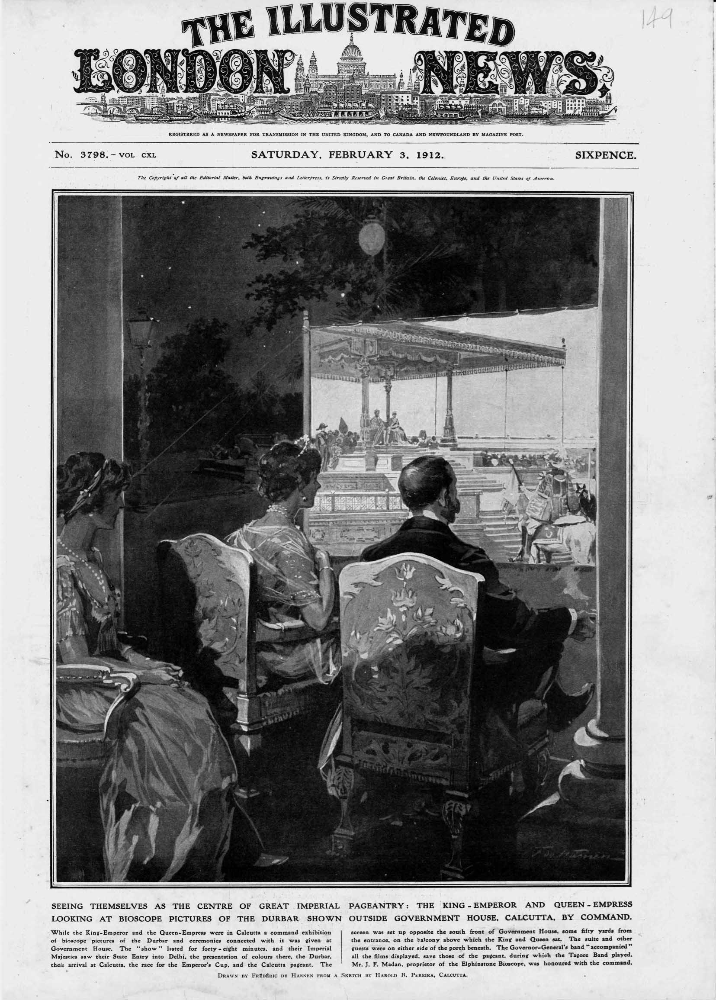
Figure 3The Illustrated London News, 1912, depicting King George V and Queen Mary viewing films screened by the Elphinstone Bioscope Company at the Delhi Durbar. The company preceded J. F. Madan’s Madan Theatres Ltd.
On January 26 the same year, there was an Animatograph screening by Mr. Arthur Sullivan at the Ninth Annual Exhibition of the Photographic Society of India. From the report published on the Statesman and Friend of India, January 27, 1897, it appears that a few screenings were held at the venue. As in London, the Animatograph had followed soon the paths of the Cinematograph into Calcutta. The Animatograph was another name for Robert Paul’s Theatrograph,9 which was first shown publicly in London in February 1896, around the same time the Cinematograph had been shown in London in the Royal Polytechnic on Regent Street.
In Calcutta too, after the first exposition, for Sullivan and his Animatograph the next destination was quite obviously the Bengali Public Theatre. His next appearance was at Minerva Theatre on January 31.10 There are also references to Cinematograph shows held in Classic Theatre in March and April 1898 by some Reiley.11 But one had to wait till October 1898, for cinema to officially burst onto the Calcutta scene. The man behind these shows was one J. J. Stevenson, another travelling showman who started his Calcutta journey with Bioscope screenings at the revered Star Theatre.12
Local newspaper reports suggest that from this very time, film shows were held in theatres in both the native (Minerva, Classic, Star) and the European towns (Theatre Royal, Opera House) of Calcutta as part of a variety entertainment programme along with theatrical productions. From this discussion, it is evident that several screen technologies arrived in Calcutta around the same time. In these years, newspaper advertisements refer to at least four different technological apparatuses showing moving pictures in Calcutta, namely – the Cinematograph, the Animatograph, the Bioscope and the Kinetoscope – all brought in by different itinerant exhibitors. Newspapers regularly advertised the sale of screen technologies in the early 1900s, including “Chronograph…Bioscopes, Cinematographes, Animatographs” along with film stock and medical equipment by the Anglo-American Bioscope Company, and “Bioscopes, Films and Accessories” by the Great Eastern Hotel Company, “the sole agents in India” of Pathé Frères. Significantly, these technologies arrived in the city independent of Bombay, suggesting that Calcutta was on a separate circuit, and the same groups did not necessarily find their way to both cities.
Within the first decade of the next century several local travelling cinema troupes popped up. These showed in the city and in the suburbs. The most notable among these include Hiralal Sen’s Royal Bioscope, A. Ganguly’s Electric Theatre, Kumar Gupta’s London Bioscope, Chatterjee Brothers’ Imperial Bioscope, Calcutta Bioscope, Wellington Bioscope, Globe Trotter Bioscope, Monarch Bioscope, Capital Bioscope and Anadi Bose’s Aurora Cinema Company. The owners of these travelling cinemas were citizens from all over Bengal and mostly Calcutta, and this list, which is by no means exhaustive, indicates how widespread bioscope13 fever had become within the first decade of its arrival in Calcutta. But the most prominent of these travelling cinemas was undoubtedly Hiralal Sen’s Royal Bioscope Company formed along with his brother Motilal Sen.
Hiralal is a romantic figure in the history of ‘Indian cinema’, particularly in Calcutta where he is accorded iconic status as the founding father of Indian cinema.14 Tales around of his achievements, struggles and untimely death in suffering. His achievements remain the stuff of legend, the filmography is contested but none of his films remain for us to see. There are several accounts of how Sen picked up the art of filmmaking, but the most stable narrative is that he learnt to operate the equipment and picked up techniques of filmmaking while assisting Mr. Stephens/ Prof. Stevenson in his exhibitions. Other accounts state that Sen learnt filmmaking from Father Eugene Lafont while studying at St Xavier’s College, Calcutta.15 Lafont is said to have experimented with imaging technologies in his laboratories, including the magic lantern, using those as educational tools through the late nineteenth century. Hiralal started out independently, and again there are conflicting narratives of how he acquired his equipment.
One version claim that he imported a camera and projector from Warwick Trading Company in London, while another suggests that he bought the equipment off Stephens/Stevenson when the latter sold it off and returned to London. By 1900, Sen had started to shoot actualities. These were mainly shots of Calcutta, street scenes, processions, etc. According to some accounts Sen also started making advertising films around 1903. He is credited by several sources as having made one feature length film, Alibaba and the Forty Thieves (1903), while others dispute the length of this film and its generic status. Sen would certainly have filmed this on the Classic Theatre stage but as the film has not survived it cannot be ascertained whether this was indeed a film in its own right, or a filmed version of the Bengali play that ran to packed houses at Classic Theatre.
Hiralal Sen appears to have been a prolific filmmaker producing several films until 1913, until he faced bankruptcy. His mythic achievements, however, cannot be open to scrutiny as none of his films survived.16 They were all destroyed in a devastating fire in 1917. While Sen takes precedence in the available histories, he was by no means the only pioneer making films in the 1900s. The Elphinstone Bioscope Company, owned by J. F. Madan, started producing newsreels made by Jyotish Sarkar. Sarkar had worked with Pathé before he joined the Madans in the early 1900s and had reportedly toured Southeast Asia with Pathé.17
04Cartographies of Cinema in the City
The nineteenth century city of Calcutta could be roughly divided into two main zones: the European ‘white’ town18 that developed around the central business, administrative and judicial hub of Dalhousie Square and expanded southwards, and the native Indian town, situated north of Dalhousie Square and inhabited by locals. Accordingly, two separate entertainment zones emerged in the rapidly urbanizing city of Calcutta. The European center of entertainment developed along Chowringhee Road, south of Dalhousie Square. Businesses, government offices, courts, the main European markets and European residential areas were all located in the vicinity of Chowringhee Road, as were army camps and the port of Calcutta. The other public site of entertainment in the city was situated in the heart of the Indian town in north Calcutta, on and around Beadon Street.
4.1Chowringhee
In the nineteenth century Chowringhee was primarily a residential district inhabited by Europeans. Chowringhee Road grew to become one of the most important arteries in the city connecting the central business and administrative district of Dalhousie Square to the southern parts of the city where the city was developing. To the west of Chowringhee Road lay the Maidan, a large green expanse that had been transformed into an urban park through the eighteenth century, and further west, beyond the Maidan, was the river and the port. The area started to develop rapidly by the late nineteenth century, and several shops and theatres appeared on the eastern side of Chowringhee Road. The Calcutta Maidan is, even today, the largest urban piece of land in the city.19
Through the nineteenth century it had also grown into a major site of public entertainment in the city. Travelling circuses pitched tents every winter, from at least as far back as the 1870s. In the light of this heritage, unsurprisingly, the Maidan also became the site of India as well as Asia’s first purposely built permanent cinema theatre. In 1902 J. F. Madan started a regular tent cinema show.20 Actor Ahindra Choudhury recalls that the tent was on the eastern fringes of the Maidan. This means the Madan tent was easy access from New Market and shops on Chowringhee Road to the east. It was also walking distance from the Fort and the Calcutta port to the west, and from the business and administrative district of Dalhousie to the north. Madan’s tent cinema became an instant hit amongst Calcuttans21 of all classes and today we come across reports of crowds queuing outside the Tent Cinema to see films, including Nitin Bose, the celebrated cinematographer and filmmaker from New Theatres. J. F. Madan also owned another theatre in the surrounding, the Corinthian Theatre22 off the northern edge of Chowringhee and just outside the limits of the white town.
4.2Beadon Street
Around the same time a vibrant film culture was developing in the Bengali entertainment district in the northern part of the city, in theatres in the Cornwallis and Beadon Street area. In the theatres of Beadon Street short plays, dances, musical performances and magic shows were a regular feature of the programme, performed before the main play, or in intervals. This mix of programming that prevailed in the Bengali Public Theatre at the time easily allowed the inclusion of cinema as a novel entertainment form.23 From 1897 film started to figure in theatre programmes, especially in the programmes of Classic Theatre, whose proprietor Amadendra Nath Dutt was continually looking for innovative means of attracting audiences to his theatre. By the end of 1898, all the key stages in Beadon Street had hosted exhibitions of the moving image, including Minerva, Classic, Emerald, Star and Bengal Theatres.
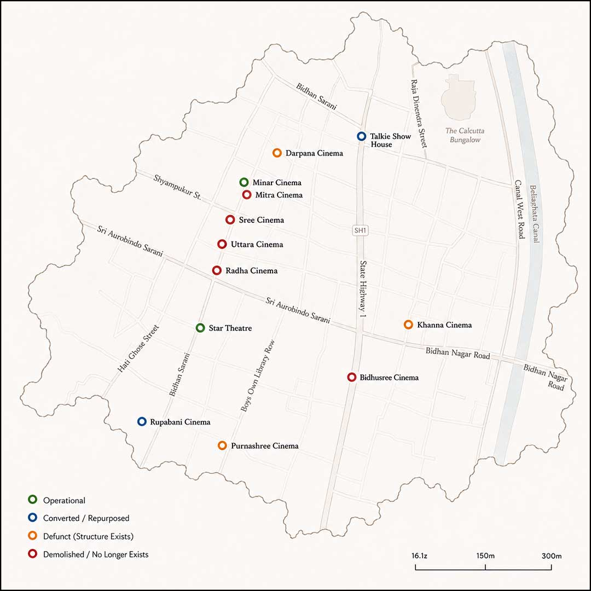
Figure 4Map showing the concentration of cinema halls in the Beadon Street–Hatibagan area.
05Cinema as Built Environment
In 1907 J. F. Madan inaugurated the Elphinstone Picture Palace, across the road from the Maidan. It was located at 5/1 Chowringhee Place, just off Chowringhee Road and behind the Hogg Market – the primary European market in the city. The Elphinstone was South Asia’s first permanent cinema theatre modelled on the picture palaces that were being built all over America, and it was the first of several cinema theatres that came up in the Chowringhee neighborhood over the next three decades.24 Its inauguration also marked the beginning of Madan’s exhibition chain that stretched across colonial India, Sri Lanka (formerly Ceylon) and Burma.
A second theatre opened in 1908 at 4-B, Chowringhee Place, opposite the Elphinstone. This was the Empire Theatre built by Arratoon Stephen, in partnership with Maurice Bandmann.25 This growth was mirrored in north Calcutta around the Bengali theatre arena. Some of these cinemas were originally built for theatres and gradually converted into cinemas, others were newly built.26 In his memoir Shatabdir Pratidhwani, recalling his earliest cinema experiences historian Atul Sur recollects that the site at 138, Cornwallis Street, (in north Calcutta, just off Beadon Street) was an empty field in his childhood.27 One winter a circus pitched a tent on the field, he says, and after they left in the summer the Madan Company pitched their tent and started film showings under their banner of Elphinstone Bioscope.
Sur added that the tent house showed films for a long time until it burnt down, it was only after this that the permanent cinema house was constructed and named Cornwallis Theatre. The Cornwallis was the first permanent cinema theatre in north Calcutta. The first Bengali feature film, Bilwamangal, produced by Madan, was released at the Cornwallis Theatre on November 1, 1919.28 Subsequently, the Cornwallis showed all the Madan Bengali productions until 1926, when actor-director Shishir Kumar Bhaduri leased the venue for his theatrical productions. The Madans built another cinema next to Cornwallis, the Crown, which was operational at least from 1925. The first Bengali film released at the Crown was Dharmapatni, on May 29, 1926. It was written by well-known Urdu writer Aga Hashr Kashmiri, directed by Jyotish Banerjee and starred famous young stage actor Durgadas Banerjee.
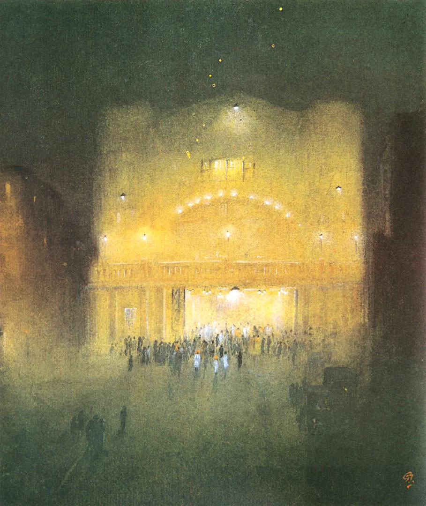
Figure 5Madan Theatre by Night, painting by Gaganendranath Tagore.
There are several reasons why new cinema theatres were clustered in these two locations through the 1910s and 1920s. First, the two neighborhoods were established hubs of entertainment in the city, and therefore exhibitors could use existing theatres to organize screenings. In addition to infrastructure these centers offered a readily available audience.
Secondly and most importantly, the availability of electricity on and around Chowringhee Road and Beadon Street facilitated the growth of the cinema. Permanent cinemas with daily shows required a steady supply of electricity unlike travelling cinemas, which held occasional shows and could work on mobile generators. While electricity had come to Calcutta in the 1890s it was not until 1899 that it was available for general use. Areas along the main thoroughfares of the city were wired up, including the arterial roads of Chowringhee Road, Dharmatalla Street and Cornwallis Street.
Further, both these areas had transport links to other parts of the city, and this helped to get in audiences.30 Managers also lobbied for, and thereby facilitated, infrastructural growth to draw in audiences. A good example of this is the arrangements made for public transport. Ahindra Choudhury discusses the problems of late-night transport to outer parts of the city, especially to the southern parts, where the Bengali middle class was increasingly moving to by this time.31 Evening shows at the theatre continued until midnight or later. Choudhury mentions that Star Theatre organized special buses to Bhowanipore and Kalighat in south Calcutta for their customers to return home after these late-night shows. Bus tickets were sold along with show tickets and Star used the added facility of late-night transport as an incentive to lure customers from the expanding southern parts of the city.
5.1Cinemas in the Twenties
By the late twenties new permanent cinemas were being built in both these areas. Reminiscing about the cinema, Sukumar Sen, linguist, writes that as far as he could recall there were five permanent cinema theatres in the city in 1919-20.32 These were Picture House, at the crossroad of Chowringhee Road and Lindsay Street, The Globe, off Lindsay Street and across the south entrance of New Market, the Elphinstone Picture Palace just north of New Market; and the Albion Theatre, north of Elphinstone, on Corporation Street. The fifth theatre he refers to was Ripon Theatre in Thanthania, in the Indian part of the city. Sukumar Sen’s memory however does not serve him accurately as he does not bring up the Empire Theatre, which was showing films from 1908. The other omissions in Sen’s reminiscences are the north Calcutta cinemas, which were already in operation by that time.
The Globe, which was in fact known as the Grand Opera House at that time, had been a nineteenth century theatre patronized by elite Europeans.33 It had been converted into a full-fledged cinema by 1920. An advert in October 1920 in The Statesman refers to the venue as both Grand Opera House and The Bijou Ltd., and the currency of both names with the audience suggests that the name change had been newly effected. The cinema was bought over by Globe Theatres Ltd. in 1922 and changed its name to The Globe.34
By this time Madan also owned several cinemas in Bombay, both directly, and in partnership with Bandmann, and we can understand that Madan was using his war profits not just for feature film production but also in expanding the pan-Indian exhibition business. By 1927, at the time of the Indian Cinematograph Committee (ICC) Enquiry, Calcutta had 12 permanent cinemas. The majority of these were directly controlled by Madan Theatres. Even the Empire, which had been owned by the Stephen-Bandmann duo, appears to have been linked with the Madans by the late 1920s. The only two cinema theatres in Chowringhee that appear to have been outside the Madans’ jurisdiction were the Globe and Picture House.35
A few other cinemas started to come up in the late 1920s. In its findings, the ICC Report of 1928 states that, compared to the size of the audience, there were very few cinema theatres in India.36 The escalating popularity of Hollywood films in Calcutta, on the other hand, led to an increase in the number of cinema theatres being built in the late 1920s and 1930s that were dedicated to showing foreign films.37 This growth was driven not just by the increased capital flow within the Calcutta industry but also by Hollywood’s direct presence in the city. An entry in the Bengali film and theatre journal, Nachghar, in early 1928, for instance, announces the construction of a new theatre in the ‘white town’, by the Bandman Company. Several of the prominent new picture houses that started in the early to mid-1930s included Chitra and New Cinema, owned by New Theatres Pvt. Ltd., Paradise that was backed jointly by East India Films and Radha Films and Rupabani.38
5.2Notes on Design
International investment in cinemas is apparent from the opening of two cinemas in Chowringhee, New Empire by Bandmann Varieties Ltd. and Lighthouse. Another new cinema that was inaugurated in late 1935 was the Metro Cinema, owned by MGM.39 It was designed by Thomas W. Lamb, a leading Scottish-American cinema architect recognised for creating spectacular “movie palaces” in the United States.40 The opening of Metro signaled the direct presence of Hollywood in the exhibition sector in Calcutta and is another instance of Hollywood’s efforts at entering into the Indian film market, an effort that was started by Universal in 1916 through the opening of its own distribution agency in India.
The Metro was built in the trendy art deco style, at the dead end of Chowringhee Road, and is prominently visible in photographs of Chowringhee for its distinctive architecture. MGM went on to build another cinema in Bombay in 1938, also named Metro, and with a similar art-deco architecture and color scheme, that resonated with the Calcutta Metro. This was clearly Metro’s effort at branding in the Indian market almost a decade before India’s independence.
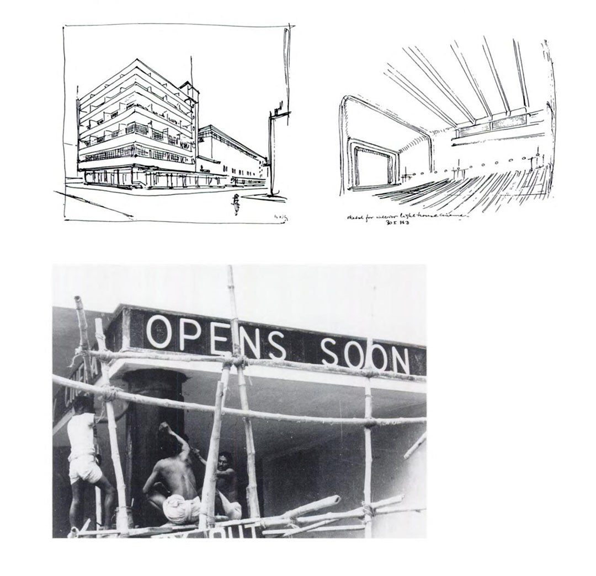
Figure 6Architectural drawings of Lighthouse Cinema, designed by Dudok.
The link between architecture and film was not new in Calcutta. Earlier, the Madan Palace of Varieties was also built in the art deco style, another instance of the Madans’ efforts at tapping into global trends in film culture.41 Moreover, this was not the only example of an international architect constructing cinema theatres in Calcutta. Lighthouse, another new cinema built behind New Market in 1938, was built by a well-known Dutch architect, W.M. Dudok. The Lighthouse’s facade retains an Art Deco feel but also recalls the blocky abstraction of the International Style, whose rectilinear combination of form and function once served as a sign of urban architectural modernism in Indian theatre design. The Lighthouse opened in 1939, with a screening of Algiers.
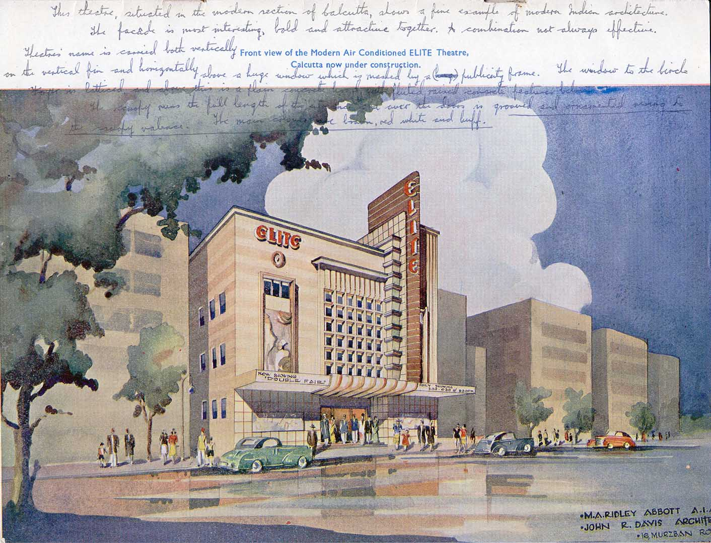
Figure 7Architectural drawing for the renovation of Elite Cinema, formerly known as Palace of Varieties.
5.3Conditions of Cinemas
This concentration of cinemas in neighborhoods impacted the conditions of theatres and the experience of cinema going in Calcutta. The first obvious distinction between the two cinema districts through the 1920s is that the Chowringhee theatres did not screen Indian films. Indian films were screened intermittently in the north Calcutta theatres. Naturally conditions of the cinemas varied between theatres with a European and wealthy Indian mass, like Globe, and those frequented by the Indian masses, as did the print quality and the conditions under which films were screened. Sukumar Sen recalls that the Elphinstone Picture Palace was the best cinema in those days, and others recalling the cinemas of the 1920s corroborated this.42
Satyajit Ray recalls that as a child he primarily grew up watching Chaplin, Keaton and Fairbanks in the elite Chowringhee cinemas:
The cinema that we loved to go to then was the Madan [Palace of Varieties], where the mellifluous tones of the Wurlitzer organ drowned the noise of the projector while heightening the drama on the screen. The Globe was nice too. It didn’t have an organ, but it had turns on the stage during intermission. Both the Globe and the Madan showed first-run foreign films, as did the Elphinstone, the Picture Palace and the Empire. They all stood clustered in the heart of Calcutta’s filmland, exuded swank and boasted an elite clientele.43
On the other hand, the cinemas showing Indian films, such as the Albion, were dank and seedy. One pinched one’s nose as one hurried past the toilet in the lobby into the auditorium, and sat on hard, creaky wooden seats. The films they showed, we were told by our elders, were not suitable for us. Since the elders always decided what we should see, the choice inevitably fell on foreign films, usually American.
The Ripon Theatre (later Jawahar), located in central Calcutta, was another rundown cinema which only released second run films, and the audience is described by Sukumar Sen as “mechho-hature” or working class. He describes going to watch an Annette Kellerman film, Queen of the Sea (1918), at Ripon.44 The film had previously been shown in Calcutta and was now being screened at this run-down cinema. Sen says that this was a long film (50 minutes), and on this occasion the operator was cranking the film very fast, despite loud protests by the audience.
This anecdote gives us a rare and vivid insight into exhibition conditions of the early 1920s. This also allows us to speculate on the reasons for this cinematic malfunction. Was the operator inexperienced? Was the venue running short of time, given that this was a long film? Did the exhibitors not want the viewers to dwell on the moving images unfolding on the screen? This was an erotic film and a major reason for its popularity was the full nudity shown on screen. Keeping in mind that the audience in the Ripon Theatre was working class, it is not entirely unlikely that the theatre manager may have instructed the operator to rush through the reels to avoid any untoward attention by the censors.
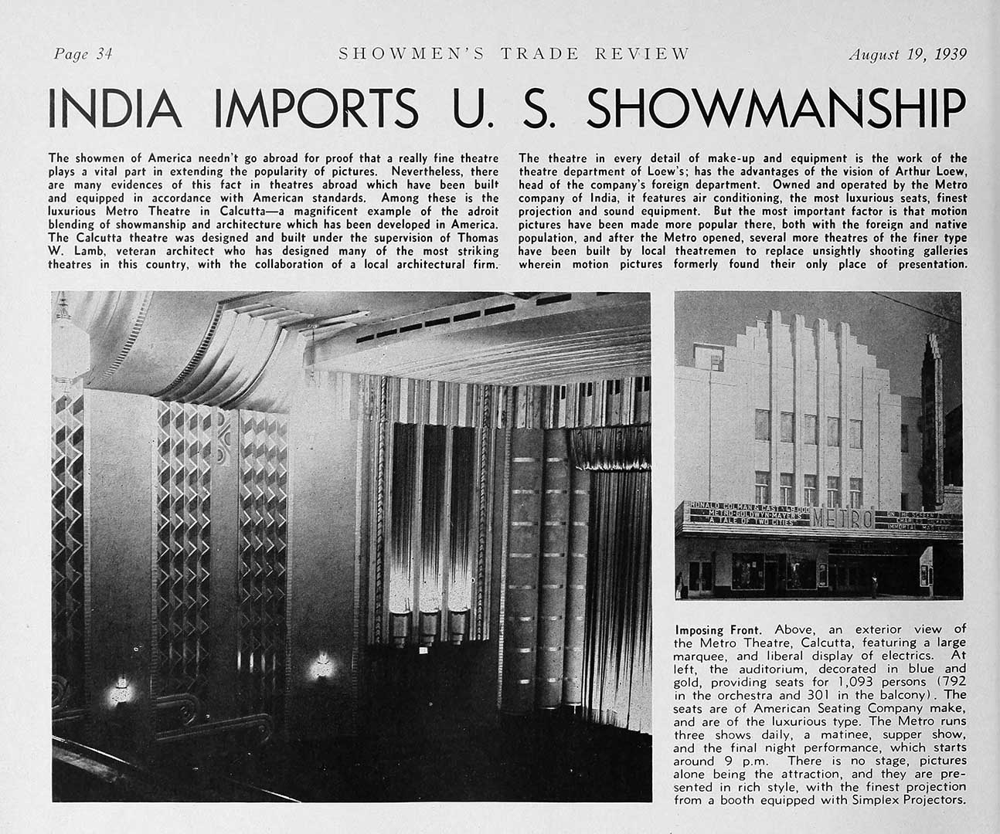
Figure 8Interior and exterior views of Metro Cinema, published in Showmen’s Trade Review, 19 August 1939.
Memoirs, diary entries and adverts in contemporary journals and newspapers give us a sense of specific localized exhibition practices in the colonial city of Calcutta. For instance, that films released on a Saturday, a practice that was also linked to the English stage and the Bengali Public Theatre in the city.45 Cinemas usually held two shows in the evenings, at 6:30 p.m. and 9:30 p.m. The two annual festival seasons in Calcutta occasioned special festival programmes that included a string of screenings from morning to late night. These were in September/October, on the occasion of the Bengali Durga Pujo festival46, and over the Christmas/New Year period, and ran over several days in the two annual holiday weeks.
06Movies Learned to talk
The transition to sound in cinema turned the industry upside down and forced studios and theatres to desperately scramble for new audio machines.47 In India, the earliest demonstration of what was known as ‘Phonofilm’ a process invented by Dr.Lee DeForest, in which sound was synchronised with the picture, was given at the Royal Opera House in Bombay, in May 1927. The programme comprised of scenes from Julius Caesar with Basil Gill, the famous London actor, in the cast. The earliest attempts at synchronised sound film production in India were made by Madan Theatres. Early in 1929, Madan Theatres exhibited the first talking picture in India, Universal’s Melody of Love at the Elphinstone Picture Palace in Calcutta.48 This was the first theatre in the East to be equipped with permanent sound apparatus.49 Soon after, on February 21, the same film was presented at the Excelsior Theatre in Bombay. By the end of 1930, more than 30 out of a total of 370 theatres in the country were technically prepared for sound projections of film.
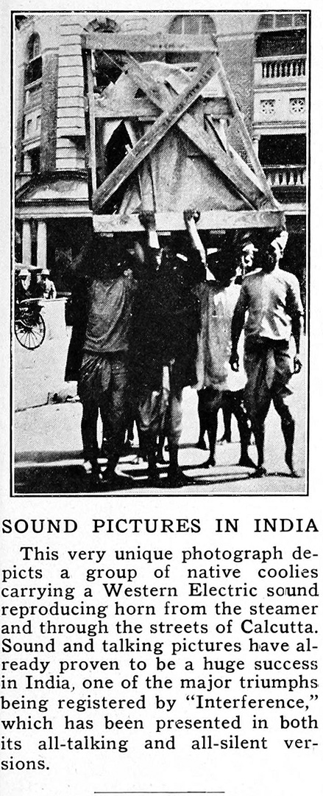
Figure 9News article from Paramount Around the World, 1928, reporting the arrival of sound systems for installation in Calcutta theatres.
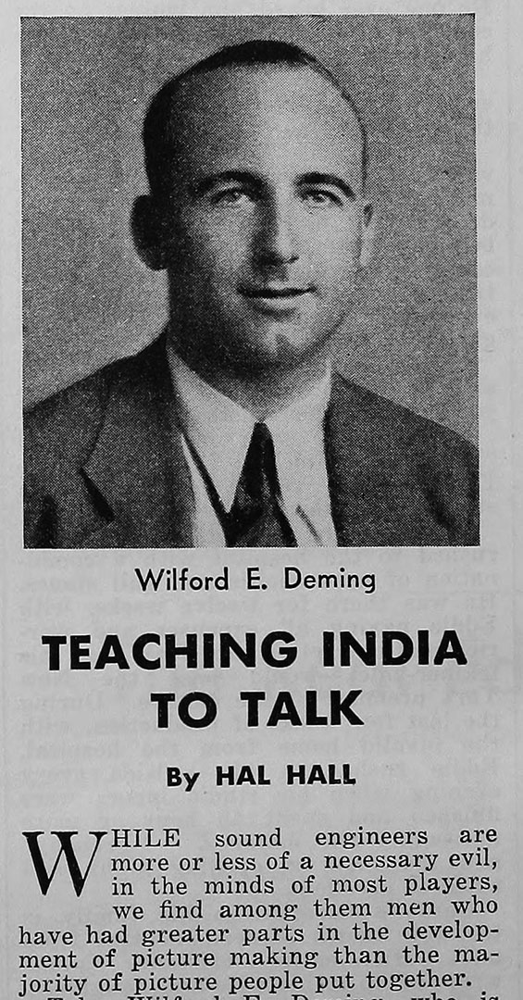
Figure 10Article on Wilford E. Deming, sound advisor for India’s first talkie, published in The New Movie Magazine, July–December 1934.
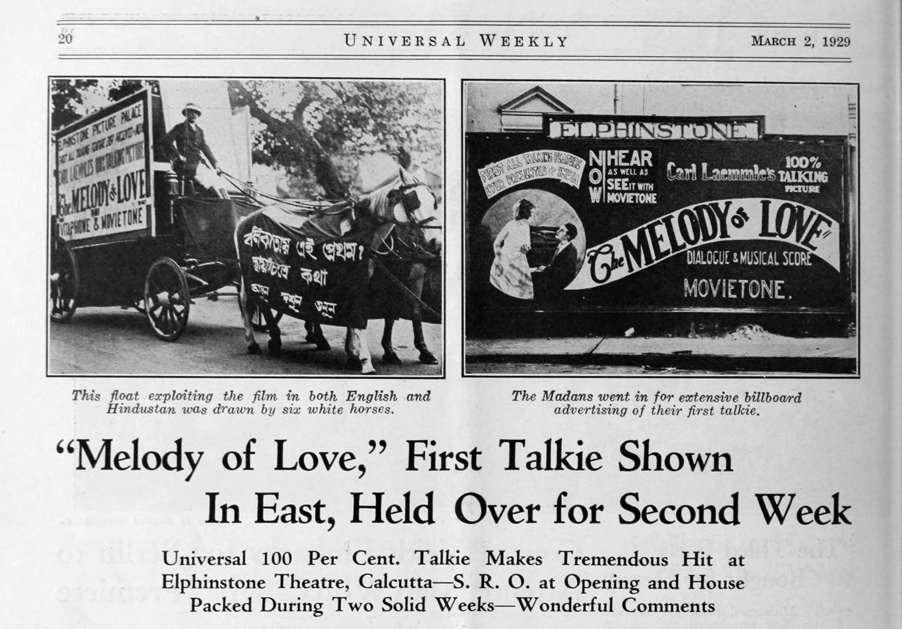
Figure 11Report on India and South Asia’s first talkie being screened at Elphinstone Picture Palace, with a poster reading, “For the first time, picture will talk. Come and see.”
The monopolistic Madans was obviously ahead of the curve, importing top-tier RCA Photophone sound equipment and portable sets directly from Hollywood, which gave their early talkies incredibly clear audio. Other major studios, like New Theatres and Bombay’s Imperial, relied on Tanar sound systems.50 Before sound fixed the language barrier, exhibitors catering to Calcutta’s diverse crowds used to squeeze written inter-titles in up to five different languages onto a single title card, meaning audiences barely had time to read the tiny text before it vanished off the screen. When the talkies finally arrived, this quirky practice died out, but it forced actors to completely change their methods, learn proper voice modulation, and start singing, since having a good singing voice instantly became the biggest requirement for surviving the new technological era.
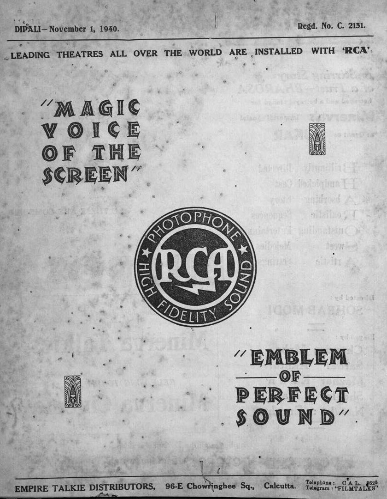
Figure 13Advertisement for the RCA Photophone sound system, published in Dipali, 1940.
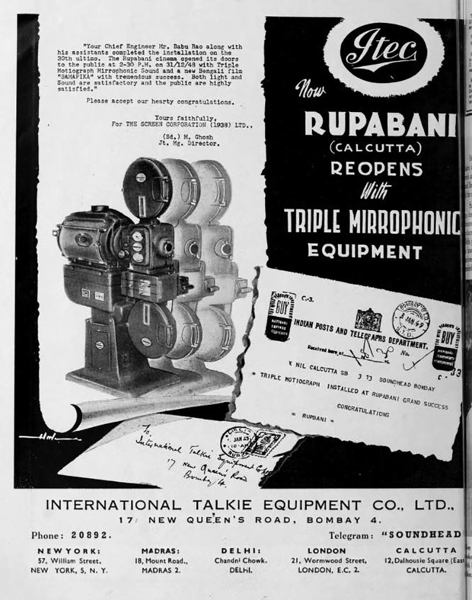
Figure 14Advertisement for Triple Microphone Equipment announcing the reopening of Rupabani with a new sound system.
When the massive shift to sound cinema hit India in the early 1930s, the film industry suddenly found itself completely dependent on imported foreign technology. To make talkies a reality, studios had to import heavy-duty recording gear and projectors from foreign companies like RCA, Western Electric, Rico, and Fidelytone. For instance, when Ardeshir Irani made India’s very first talkie, Alam Ara, in 1931, he used a Tanar single-system recorder imported from Hollywood. But it was far from an easy process. An American sound engineer named Wilford Deming Jr. was brought in to help assemble the gear, but when he asked for a very high daily fee, Irani and his assistant Rustom Barucha decided to figure it out and record the sound themselves.51 To make matters even more chaotic, the Imperial studio was located right next to train tracks, meaning the crew literally had to shoot in the dead of night when the trains stopped running just to avoid ruining the audio.
Meanwhile, in Calcutta, the major studios were taking completely different approaches to these foreign experts. Deming eventually headed to Calcutta as the chief engineer for the Radio Installation Co. (Rico) and was quickly hired by New Theatres in 1931. He was absolutely shocked by the local setups, noting that studios were shooting under flimsy cloth or glass roofs, processing film in “distressing” laboratory conditions, and blindly groping to figure out the basics of the medium. However, New Theatres was deeply committed to nurturing homegrown talent, so they tasked Deming with training a new generation of local technicians. One of his apprentices was Mukul Bose, who would later develop a revolutionary playback apparatus for the 1935 film Dhoop Chhaon (also known as Bhagya Chakra). Over at Madan Theatres, they relied on an RCA sound expert named Elmore B. Lyford. When the studio released the 1931 talkie Jore Barat, critics absolutely tore into Lyford’s sound engineering.52 The real issue was a culture clash, Lyford had zero grasp of the Bengali language, meaning he had absolutely no idea how to properly adjust the volume mixer to match the natural emotional fluctuations of the actors’ dialogue.
Operating these early machines was a total technical nightmare that practically drove recordists insane53. According to early sound recordist S. Damle, the biggest villain was the camera motor, which hummed so loudly that the microphones constantly picked it up. Since soundproof camera blimps hadn’t been introduced yet, technicians would desperately wrap the cameras under specially designed heavy mattresses and blankets. Even then, the mechanical grind would often bleed into quiet, emotional scenes and completely ruin the take. And if the camera wasn’t ruining the shot, the battery-operated amplifiers were, suffering from an odd crackling that sounded exactly like distant firecrackers. On top of that, the carbon granules inside the microphones would occasionally pack together, completely killing the electrical signal.
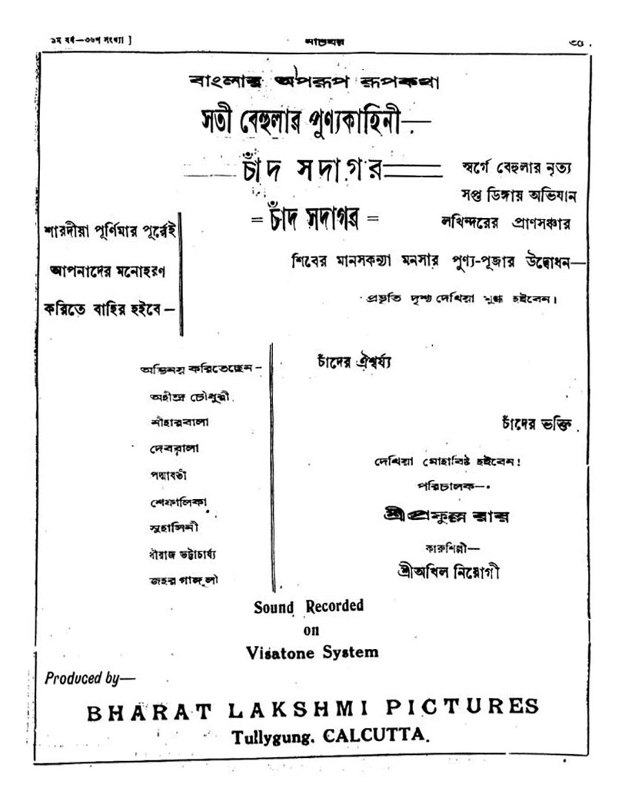
Figure 15Advertisement (Bengali) for film release highlighting the Visatone sound recording system, published in Nachghar film magazine.
Because renting these foreign machines and paying their massive royalties cost a fortune, especially during the Great Depression, local visionaries began stepping up to create indigenous swadeshi alternatives. The most famous of these was the Csystophone, invented by a Calcutta University research scholar named Bamadas Chatterjee54. Proudly advertised as ‘Made in India,’ it was fifty percent cheaper than imported machines and could be seamlessly attached to old silent projectors without causing any jerking motions. The invention was installed at major Calcutta show houses like Rupabani and projected P.C. Barua’s acclaimed film Bengal 1983. Sadly, despite selling units across the region, it was eventually driven out and replaced by an RCA system just to appease the powerful foreign distributors.55 Over in Lahore, another inventor named Nazir Mohammad built the Fezi Sound System, a homegrown double-system recording device56. Tragically, when a 1932 movie called Pakdaman Raqasa flopped, the inexperienced studio bosses ruthlessly blamed the machine for the audio, throwing the indigenous invention under the bus. Other local attempts, like C.L.D. Mullick’s Krishna Sound System, also popped up as technicians desperately tried to break free from foreign reliance.
Because simply recording a voice was initially seen as a miracle of “Western science,” early Indian directors were terrified of silence and completely overcompensated. They would stuff “some sound” into literally every single foot of film, heavily advertising their movies as “100 percent talking, singing, dancing” spectacles featuring “scientific singing”.57 However, critics in Calcutta and beyond soon started calling out this boring “too-muchism”. The industry quickly realized that two-hour marathons crammed with non-stop dialogue and up to twenty songs were literally putting audiences to sleep. The backlash was so real that some distributors even tried to revive silent films, running ads claiming that “images do not speak” and that hearing an actor’s voice was an absurd concept. As studios finally got the hang of the chaotic new technology, the novelty wore off and they started telling dynamic stories again.
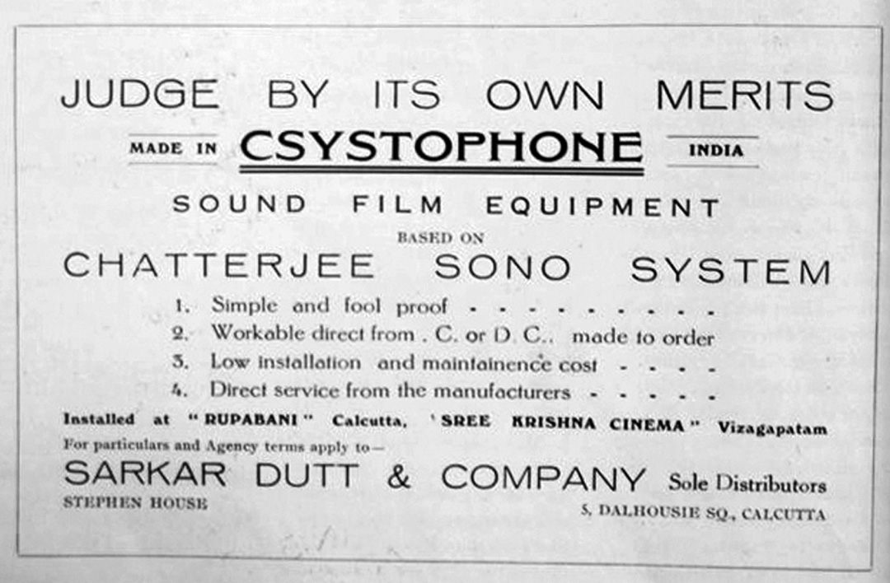
Figure 12Advertisement of Cystophone by Bamadas Chatterjee, published in Filmland, 10 December 1932.
07Screens in Transition
According to film archivist Hemant Chaturvedi, who is spearheading the Single Screen Cinemas Project, there were over 25,000 single-screen cinemas in India in 1990. That number dwindled to just about 6,000 by 2022, a sharp drop of 76 percent. Therefore, the 1990s, marked by India’s economic liberalization, saw the gradual disappearance of single screen cinema theatres. During the 1990s, West Bengal had between 800 and 900 single screen cinema halls operating in its 23 districts. However, in 2010, the number of active single screen theatres in the state shrank to 33058 (Film Federation of India report). Records retrieved from the West Bengal Department of Information and Cultural Affairs show that, as of 2022, there were only 131 active single-screen cinema theatres and 33 multiplexes in the state. Today, Kolkata, with an estimated population of 14 million in the broader metropolitan area, has only 26 active single screen theatres and 24 multiplexes.
For much of the twentieth century, the single-screen cinema hall in West Bengal operated within a relatively stable technological regime. Projection was mechanical, labour-intensive, and locally mastered. Carbon arc lamps, later xenon bulbs, 35mm reels, sound heads, and manual changeovers created a rhythm of exhibition that depended on skilled human intervention. Projectionists were not peripheral workers; they were central to the functioning of the cinema hall. Their embodied knowledge, judging reel tension, sound balance, lamp heat, and image steadiness, formed the invisible infrastructure of cinema exhibition.
The first significant rupture in this equilibrium came with the expansion of television in the 1980s. In West Bengal, state-run Doordarshan initially posed threat to cinema halls. Its limited programming, fixed schedules, and uneven reception meant that cinema retained its primacy as a site of collective leisure. However, the arrival of cable television in the early 1990s altered this balance decisively. Cable operators offered recent films, music programmes, and serials at a fraction of the cost of a cinema ticket, reshaping everyday media consumption patterns.
Yet even cable television did not immediately dismantle the cinema hall. Instead, it gradually thinned weekday audiences, shortened theatrical runs, and reduced repeat viewership. Single-screen halls responded by extending the runs of hit films, increasing matinee shows, or screening lower-budget films that could be acquired cheaply. In districts such as Howrah, Bardhaman, and Bankura, this period marked the beginning of uneven decline rather than abrupt collapse.
The next technological shift proved far more destabilizing. The proliferation of VCDs and DVDs in the late 1990s and early 2000s fundamentally altered access to cinema. Pirated discs circulated widely through informal markets across industrial and semi-urban regions. Films were often available within days of release, sometimes even before their theatrical runs ended. For many viewers, particularly younger audiences, the cinema hall ceased to be the primary site of first viewing.
Digital projection marked another decisive break. While digital systems promised lower distribution costs and eliminated physical prints, they demanded heavy upfront investment. Single-screen halls were required to install digital projectors, servers, secure playback systems, and often air-conditioning. For many privately owned halls operating on thin margins, this transition was financially unviable. Unlike multiplex chains, which benefited from corporate financing and bulk negotiations, single-screen halls faced technological upgrading as an existential gamble.
Real-estate pressures compounded technological stress. Many cinema halls occupied centrally located plots whose land value far exceeded their earning capacity as theatres. As audiences declined, owners faced mounting incentives to sell or repurpose properties. In Calcutta, Bardhaman, and Asansol, halls were replaced by shopping complexes, residential towers, or commercial offices. In smaller towns, they became marriage halls, warehouses, party offices, or abandoned structures.
08Why Remember Cinema Halls?
In this juncture, where single screens are being erased across the country and in Calcutta as well, and when multiplexes are emerging while some multiplexes themselves are being shut down due to lower profits, it becomes important to position ourselves differently and look at cinema halls not merely as buildings or architectural structures, but as assemblages of several elements, including machines, spaces, human beings, socio-cultural strata, and other related entities. Moreover, the buildings that are vanishing, being renovated, repurposed, or demolished have disappeared in the very recent past, mostly within the last two decades.
In that sense, they do not yet belong to the category of conventional heritage, yet they continue to carry the memories of people. The people who visited these spaces are still alive, and their memories remain, even as the halls themselves gradually disappear. It is, therefore, a peculiar condition in which the things that are vanishing do not belong to a distant past, nor are they merely buildings or residential complexes or heritage monuments. Though, these buildings carry significant histories and anecdotes related to circulation, exhibition, architectural transformations and technological advancements associated with cinema-going.
Here comes the challenge of studying these buildings, documenting them, or archiving them while they are vanishing. parallelly, there is also the task of archiving and documenting data from people who are still alive and who have been associated with these places, collecting memorabilia and artefacts associated with them, such as old tickets, machines, architectural drawings, and others. How, then, can we study these buildings through the lens of assemblage? Before moving towards that question, it is necessary to have a brief overview of what recent scholarship has been doing in similar cases of theatres and cinema halls.
09Reading the Existing Scholarship
For a long time, cinema studies remained centred on films themselves. Early film historiography focused largely on directors, movements, genres, and national cinemas. While this approach produced important insights, it left several aspects of cinema culture underexplored, particularly the conditions under which films were viewed and the social contexts of spectatorship.
A significant shift began in the late twentieth century, when scholars started questioning the limits of text-centred film history. Robert C. Allen and Douglas Gomery’s call to rethink film historiography marked a crucial turning point, arguing that cinema history needed to engage with institutions, audiences, exhibition practices, and material conditions rather than focusing solely on films as cultural objects. This intervention laid the groundwork for what would later be known as the New Cinema History.
The New Cinema History challenged traditional narratives by underlining cinema as a social practice. It emphasized that cinema-going is shaped by place, time, audience composition, and exhibition infrastructure. Jeffrey Richards’s The Age of the Dream Palace examined cinema-going in 1930s Britain by combining textual analysis with archival research on exhibition and audiences, particularly focusing on working-class spectatorship. Annette Kuhn’s seminal work on cinema and cultural memory further expanded this framework. Through oral history projects such as Cinema Culture in 1930s Britain, Kuhn showed how memories of cinema-going offer valuable insights into social life, gender relations, and generational experience. Other scholars, including Richard Maltby, Daniel Biltereyst, and Philippe Meers, consolidated this approach by developing frameworks for studying cinema audiences and exhibition practices. This methodological openness is particularly relevant for contexts like India, where cinema halls played a crucial role in shaping public culture.
Brian Larkin’s work on theatres in colonial Kano offers another particularly useful framework. In Theaters of the Profane, Larkin argues that cinema halls functioned as nodes within urban infrastructure. His later work further emphasizes the infrastructural dimension of cinema, highlighting how electricity, sound systems, projection technologies, and maintenance practices shape the experience of media consumption. This focus on infrastructure resonates strongly with the study of single-screen cinema halls, especially in regions where technological transitions were uneven and often incomplete.
Within Indian scholarship, similar concerns appear in work that examines how cinema halls functioned as landmarks and sites of social interaction. Madhusree Dutta’s studies of Bombay’s cinema show how theatres were embedded within local economies and public life. Lakshmi Srinivas’s thorough ethnographic study House Full offers a detailed account of Indian audiences as expressive, vocal, and socially engaged. On the other hand, the Encyclopedia of Indian Cinema and related historical studies provide valuable overviews of production and distribution but often treat exhibition as a secondary concern.
There exists a substantial body of scholarship on the histories of photography, visual culture, and early cinematic technologies in India, ranging from Christopher Pinney’s Camera Indica: The Social Life of Indian Photographs and The Coming of Photography in India to Sudhir Mahadevan’s A Very Old Machine: The Many Origins of the Cinema in India and Ranjani Mazumdar’s Bombay Cinema: An Archive of the City. These works have significantly expanded our understanding of visual media, exhibition practices, and urban modernity in India. Yet, there remains relatively little work that approaches the single screen cinemas of West Bengal as assemblages of architecture, technology, memory, and everyday practices. By undertaking a micro-level study of these interconnected elements, the present research attempts to address this gap and contribute to a more nuanced understanding of cinema halls as complex socio-technical spaces.
10Towards a Methodology
Researching single-screen cinema halls in Bengal presents a basic methodological problem. Many of the spaces under study no longer function as cinemas. Some have been demolished. Others have been repurposed beyond recognition. A few survive in altered forms. As a result, this research cannot rely on a single method or source. Conventional archival research alone is insufficient. Official records are fragmentary, unevenly preserved, and often silent on everyday practices. At the same time, memory-based sources pose challenges of subjectivity, selectivity, and loss. Visual materials such as photographs and videos capture material traces but cannot speak on their own.
As per our understanding so far, the study can adopt a mixed-method approach, bringing together archival research, ethnographic fieldwork, interviews, photography, videography, sketching, and the analysis of social media conversations, where people often share memories, anecdotes, and nostalgic reflections associated with these places. Such an approach allows us to look at cinema halls not merely as buildings, but as spaces constituted by technologies, objects, practices, and lived experiences.
Only through the combination of these different methods can we begin to construct a body of work capable of offering a technical and cultural look back at the history of single screen cinemas in and around West Bengal. By documenting not only the material remains of these spaces but also the memories and practices attached to them, the study attempts to explore cinema halls as assemblages of architecture, technology, and human experience.
11Research in Progress and Outcomes
Many of the questions driving this research remain open. New ideas, possibilities, and iterations continue to emerge from fieldwork, archival encounters, and conversations, and the precise research questions are yet to be finalized. Rather than presenting a finished argument, this notebook attempts to document an ongoing process of exploration.
Visual Essay — When Screens Multiplied
A visual essay developed from fieldwork in West Bengal, focusing particularly on Parbati Cinema in Howrah, where a family associated with the hall was found living within the former theatre space, including on the stage. When Screens Multiplied brings together photographs, visual material, and textual reflection to think about performance, domestic life, and the afterlife of a single screen theatre. Prepared for submission to Performance Research Journal, the work is now being developed further for another format.
View Abstract
When Screens Multiplied
Neelakantan Keshavan, Sourapravo Chatterjee
When the screens multiplied, and when they multiplexed, the single screen theatre began its slow descent into ruin. Across India, these once-bustling halls fell silent, some already erased, others lingering only as shells awaiting their return into the circuits of real estate. Their emptiness carries the twilight charm of transition, of a collective seeing culture on its fading way out.
The Parbati Cinema in Howrah shows this transition in its starkest form. The caretaker of that cinema hall, appointed by the owners of the place, lives with his family inside the theatre hall, using it as a temporary home. The rows that once parked hundreds now hold a solitary two-wheeler, while on the stage—meant for plays, songs, and films—a family makes its precarious home. A saree hangs as curtain, a halogen lamp replaces the light beam of the projector, and the hall becomes a palatial living room for those with little means and no audience at all. The vastness of a theatre collapses into the intimacy of domesticity, producing an irony that is both comic and tragic at the same time.
This change of use is not a planned conversion but an emergence, a stop-over born of circumstance. It reveals the strangeness of another life inhabiting what was once a house of spectacle. The theatre becomes a set again, only this time the play is infra-ordinary, the actors a family moving quietly across rows and stage, the audience absent but somehow imaginable. A scene that could easily lend itself to social satire, yet also carries the weight of survival etched into an unlikely dwelling.
We intend to describe this scene and situation, through a combination of photography and textual essay, as an ironic moment, when the dwellers or the inhabitants and the actors come close together and the actual and the performative are drawn into a tight weave. Our speculative exploration intends to enquire: what does it mean to perform a home in an empty theatre set? We are interested in how domestic gestures inhabit and transform a stage built for spectacle, and how such inhabitation might itself be read as performance. In doing so, we draw from traditions of photo-textual practice—Sekula’s critical documentary of labour and spectacle, Sophie Calle’s play with observation and performance, and the speculative, ironic artworks of Raqs Media Collective—to describe the life within the after-life of single-screen ruin.
Popular Media Publication — Hiralal Sen and Early Cinema
An article on Hiralal Sen and the early film culture of Calcutta, published in Daakbangla, tracing the legacy and controversies surrounding Sen, the advent of Madan and early film screenings, stage plays, and the changing culture of visual entertainment up to his untimely death.
In March 2026, a three-hour guided walk through Hatibagan-Shyambazar, popularly known as Theatre Para, brought together eight participants to explore its constellation of cinema halls and proscenium theatres. The walk became a conversation rather than a one-way account of history, with participants sharing memories and experiences of the neighbourhood across different generations.
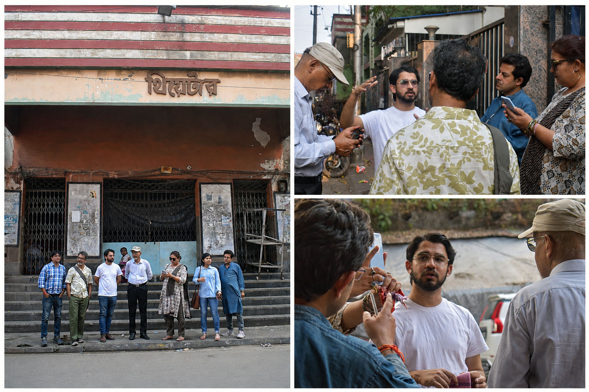
Alongside this, the growing archive of photographs, historical documents, newspaper clippings, and other materials collected over the years may serve as a supplementary archive for future research. An exhaustive list of cinema halls across Calcutta, West Bengal, and five other districts has also been compiled and is attached as an annexure. Together, these materials are intended not as a finished proposal, but as fragments and traces from which future questions, methods, and directions may gradually take shape.
12Notes and Observations
1
Howrah is a major urban centre on, directly opposite Kolkata. The two cities have historically been closely connected through transport, commerce, industry and everyday movement. ↩ back to text
2
Oral conversations with former viewers and residents of the neighbourhood; author's field notes and interviews. ↩ back to text
3
Here, “lived environment” refers to the cinema hall as a space experienced through repeated encounters among audiences, workers, technologies, architecture and everyday routines. ↩ back to text
4
Calcutta was the capital of British India from 1772 until 1911 and one of the principal administrative, commercial and cultural centres of the British Empire in South Asia. ↩ back to text
5
Limelight, produced by heating lime with an oxy-hydrogen flame, provided a bright source of illumination for projection and theatrical display. ↩ back to text
6
The mechanism differed from the cylindrical systems of the zoetrope and praxinoscope: the images were carried on a long roll moving between two spindles, making the device closer in principle to a panorama. ↩ back to text
7
The Times of India, 8 July 1896; cited in Eric Barnouw and S. Krishnaswamy, Indian Film, p. 5. ↩ back to text
8
Journal of the Photographic Society of India, July 1896, pp. 110–11; Stephen Bottomore, “A New Claim,” The Bioscope Blog, 15 August 2007. ↩ back to text
9
Luke McKernan, “R. W. Paul,” Screenonline. ↩ back to text
10
Sajal Chatterjee, Aar Rekho Na Aadhare, pp. 22–23; contemporary newspaper reports of the early Cinematograph and Animatograph exhibitions in Calcutta. ↩ back to text
11
Sankar Bhattacharya, Bangla Rangalayer Itihaser Upadan (Calcutta: West Bengal State Book Board, 1982), pp. 467, 500–502. ↩ back to text
12
Sajal Chatterjee, Aar Rekho Na Aadhare, p. 31; The Statesman, October 1898–May 1899. ↩ back to text
13
The term “bioscope” gradually became a popular designation for film in Calcutta, even though the Bioscope was only one among several motion-picture technologies circulating in the city. ↩ back to text
14
Jha, “Profiles of Pioneers,” Cinema Vision 1, no. 1 (1980), p. 54; Eric Barnouw and S. Krishnaswamy, Indian Film; Mukherjee, Bangla Chalachchitrer Itihas; Mukherjee, “Hiralal Sen,” in Seventy Years of Indian Cinema, pp. 49–59; Asghar, Hiralal Sen. ↩ back to text
15
Asghar, Hiralal Sen; Sajal Chatterjee, Aar Rekho Na Aadhare. ↩ back to text
16
The surviving record of Hiralal Sen's filmmaking is therefore dependent upon advertisements, memoirs, biographies, newspaper reports and later historical accounts rather than surviving films. ↩ back to text
17
Jha, “Profiles of Pioneers,” Cinema Vision 1, no. 1 (1980), p. 54; Eric Barnouw and S. Krishnaswamy, Indian Film. ↩ back to text
18
Swati Chattopadhyay, Representing Calcutta: Modernity, Nationalism, and the Colonial Uncanny (London: Routledge, 2006), p. 76. ↩ back to text
19
The Maidan developed as a large open urban space during the eighteenth century and subsequently became one of Calcutta's principal sites of public entertainment. Its location between Chowringhee, Fort William, the river and the central city made it particularly accessible to different groups of spectators. ↩ back to text
20
J. F. Madan in Indian Cinematograph Committee Evidence, vol. 2, p. 835; Ahindra Choudhury, Nijere Haraye Khunji, vol. 1, pp. 49–50. ↩ back to text
21
Reports describe crowds gathering outside the Maidan Tent Cinema. The tent continued to screen films for the following decades; on 24 March 1917, Madan's Elphinstone Bioscope screened the five-reel Satyawadi Raja Harischandra there. ↩ back to text
22
The Corinthian Theatre stood at 5 Dharmatalla Street and had passed into J. F. Madan's ownership in the 1890s. It was showing films by June 1901 and hosted the first advertised exhibition in Bengal of the Coronation Procession on Bioscope on 24 September 1902. ↩ back to text
23
The Statesman, advertisements cited in Sankar Bhattacharya, Bangla Rangalayer Itihaser Upakatha, p. 284; see also Bhattacharya for contemporary Bengali theatre programmes. Cinema could therefore appear as one attraction within a larger evening of theatre, music, dance, magic and other performances. ↩ back to text
24
The Madan exhibition network subsequently extended across colonial India, Ceylon and Burma. The Elphinstone therefore marked not simply the construction of a permanent cinema but the beginning of a much larger exhibition enterprise. ↩ back to text
25
The Statesman, 13 March 1922; see also the theatre records associated with Arratoon Stephen and Maurice Bandmann; 1. Balme CB. The Globalization of Theatre 1870–1930: The Theatrical Networks of Maurice E. Bandmann. Cambridge University Press; 2019. ↩ back to text
26
Early cinema architecture in Calcutta developed through both conversion and new construction: older theatres were adapted for film exhibition, while purpose-built cinema houses were constructed alongside them. ↩ back to text
27
Atul Sur, “Shatabdir Pratidhwani” (1984), reprinted in Sugata Sinha, ed., Jugopat 2, no. 2 (2004), p. 7. The Elphinstone Bioscope was advertised from 138 Cornwallis Street in May 1915 in The Statesman. ↩ back to text
28
Nandan Directory; see also Atul Sur, “Shatabdir Pratidhwani,” reprinted in Jugopat 2, no. 2 (2004), p. 7. ↩ back to text
29
“Electric Lighting for Calcutta,” The Statesman, 6 December 1898, reprinted in 100 Years of The Statesman, 1875–1975 (Calcutta: The Statesman, 1975), p. 91. Electricity had reached Calcutta in the 1890s but became available for general use only in 1899; the main thoroughfares, including Chowringhee Road, Dharmatalla Street and Cornwallis Street, were among the areas wired. ↩ back to text
30
Chowringhee and Beadon Street occupied central positions within their respective audience networks and were connected to other parts of the city by transport. Cinema location was therefore closely tied to accessibility as well as existing entertainment infrastructure. ↩ back to text
31
Ahindra Choudhury, Nijere Haraye Khunji, vol. 1, pp. 351–52. ↩ back to text
32
Sukumar Sen, “Diner Pore Din Je Gelo” (1982), reprinted in Sugata Sinha, ed., Jugopat 2, no. 2 (2004), p. 41. ↩ back to text
33
The Statesman, October 1920; Indian Cinematograph Committee Evidence, vol. 2, p. 770. ↩ back to text
34
Indian Cinematograph Committee Evidence, vol. 2, p. 770. N. C. Laharry, manager of the Globe, gives 1922 as the year of the takeover. ↩ back to text
35
The Statesman, October 1920. The Picture House was at 19 Chowringhee Road; the location had earlier been associated with Arratoon Stephen, and Mr. DuCasse was its manager in October 1920. ↩ back to text
36
Indian Cinematograph Committee, 1927–28, Table 2. The contemporary enquiry recorded 14 permanent cinemas in Calcutta by 1927–28; 12 additional cinemas were recorded in the rest of Bengal province. ↩ back to text
37
Nachghar IV, no. 33 (January–February 1928) announced the construction of a new theatre in the “white town” by the Bandman Company. ↩ back to text
38
Nachghar, IV, no. 33, January–February 1928; contemporary studio-news reports in Nachghar, Chitralekha and Varieties. ↩ back to text
39
The Times of India and contemporary film-journal reports on the opening of Metro Cinema, 1935. ↩ back to text
40
Thomas Lamb designed a large number of cinemas internationally, including at least 48 in New York. ↩ back to text
41
The use of Art Deco in the Madan Palace of Varieties formed part of a wider engagement with international architectural and cinematic trends during the interwar period. ↩ back to text
42
Sukumar Sen, “Diner Pore Din Je Gelo,” reprinted in Sugata Sinha, ed., Jugopat 2, no. 2 (2004), p. 41. ↩ back to text
43
Satyajit Ray, recollection reproduced in Cinema Vision, vol. 1, no. 1 (1980), pp. 6, 51. ↩ back to text
44
Sukumar Sen, “Diner Pore Din Je Gelo,” reprinted in Jugopat 2, no. 2 (2004), p. 41. ↩ back to text
45
Saturday releases were connected with established practices of the English stage and Bengali Public Theatre. Indian Cinematograph Committee Evidence, vol. 2, p. 771. ↩ back to text
46
Annual Bengali festival dedicated to the goddess Durga, traditionally celebrated over several days in September or October. In Calcutta it was also an important period of public entertainment, with cinemas extending their programming through the festival period. ↩ back to text
47
The transition involved more than adding a soundtrack. Sound required new recording and reproduction equipment, new projection arrangements, additional technical expertise and new forms of training for studio personnel. ↩ back to text
48
The Statesman, February 1929; contemporary exhibition records place the first Indian presentation of Melody of Love at the Elphinstone Picture Palace, Calcutta. By the autumn of 1930, seven cinemas in Calcutta had reportedly been equipped for talkies. ↩ back to text
49
The Elphinstone was described as the only venue in India wired for sound when Melody of Love was first exhibited there in 1929. ↩ back to text
50
The new sound regime involved several competing systems and manufacturers. RCA and Western Electric were among the principal suppliers, while Tanar, Rico, Fidelytone, Selenophon-Korting, Visatone and other systems also entered the Indian market. Equipment was frequently imported, leased and installed with technical assistance from foreign companies. ↩ back to text
51
B. D. Garga, “The Making of Alam Ara,” Cinema Vision India, 1, no. 2 (1980), pp. 11–12. ↩ back to text
52
A contemporary review of Jore Barat criticised the sound work of Elmore B. Lyford, an RCA sound specialist, as well as the photography of T. Marconi. Filmland, 2, no. 69 (1931), p. 14. ↩ back to text
53
S. B. Thakkar, “The Challenge of Sound,” Cinema Vision India, 1, no. 2 (1980), pp. 13–18. Early sound recording was affected by camera-motor noise, inadequate soundproofing and unpredictable electrical interference. ↩ back to text
54
Filmland, 3, no. 117 (1932), p. 14. Contemporary promotional material stated that the equipment was approximately 50 percent cheaper than foreign machines. ↩ back to text
The Fezi Sound System was developed by Nazir Mohammad of Auto Welding Co., Lahore. It was a double-system recording device and was used for Pakdaman Raqasa (1932). ↩ back to text
57
The Cinema, April 1932, advertisement for Sagar’s Super Talkies, “Scientific Singing,” p. 8; The Cinema, May 1931, advertisement for Famous Pictures, “Images Do Not Speak,” p. 40. ↩ back to text
58
Film Federation of India, “Statewise Number of Single Screens,” 2010. ↩ back to text
13References
1Acland, Charles R. Screen Traffic: Movies, Multiplexes, and Global Culture. Durham: Duke University Press, 2003.
2Allen, Robert C., and Douglas Gomery. Film History: Theory and Practice. New York: Knopf, 1985.
3Athique, Adrian, and Douglas Hill. The Multiplex in India: A Cultural Economy of Urban Leisure. London and New York: Routledge, 2010.
4Athique, Adrian. “Cinema as Social Space: The Case of the Multiplex.” In Routledge Handbook of Indian Cinemas, edited by K. Moti Gokulsing and Wimal Dissanayake, 404–412. London and New York: Routledge, 2013.
5Athique, Adrian. “From Cinema Hall to Multiplex: A Public History.” South Asian Popular Culture 9, no. 2 (July 2011): 147–160.
6Aveyard, Karina, and Albert Moran, eds. Watching Films: New Perspectives on Movie-Going, Exhibition and Reception. Bristol: Intellect, 2013.
7Bhaumik, Kaushik. “The Emergence of the Bombay Film Industry, 1913-1936.” PhD diss., University of Oxford, 2001.
8Biltereyst, Daniël, Richard Maltby, and Philippe Meers, eds. The Routledge Companion to New Cinema History. London: Routledge, 2019.
9Chatterjee, Ranita. “Cinema in the Colonial City: Early Film Audiences in Calcutta.” In The Indian Cinema Book, edited by Ian Christie and Shalini Sharma. London: British Film Institute, 2011.
10Chatterjee, Ranita. “Journeys in and Beyond the City: Cinema in Calcutta, 1897-1939.” PhD diss., University of Westminster, 2011.
11Christie, Ian, ed. Audiences: Defining and Researching Screen Entertainment Reception. Amsterdam: Amsterdam University Press, 2012.
12Dickey, Sara. Cinema and the Urban Poor in South India. Cambridge: Cambridge University Press, 1993.
13Dutta, Madhusree. Popular Cinema and Public Culture in Bombay. Mumbai: Majlis, 2001.
14Elsaesser, Thomas. “The New Film History.” Sight and Sound 55, no. 4 (Autumn 1986): 246–251.
16Indian Cinematograph Committee. Evidence: Report of the Indian Cinematograph Committee 1927–1928. Calcutta: Government of India Central Publication Branch, 1928.
17Ingle, Hrishikesh S. “Multiplex Exhibition and the New Marathi Cinema.” Journal of the Moving Image, no. 13 (2015): 30–63.
18Ingle, Hrishikesh S. Marathi Cinema, Cultural Space, and Liminality: A History. New Delhi: Oxford University Press, 2022.
19Kuhn, Annette. An Everyday Magic: Cinema and Cultural Memory. London: I.B. Tauris, 2002.
20Larkin, Brian. Signal and Noise: Media, Infrastructure, and Culture in Nigeria. Durham, NC: Duke University Press, 2008.
21Larkin, Brian. Theaters of the Profane: Cinema and Colonial Urbanism. Durham, NC: Duke University Press, 2008.
22Maltby, Richard, Daniel Biltereyst, and Philippe Meers, eds. Explorations in New Cinema History: Approaches and Case Studies. Chichester: Wiley-Blackwell, 2011.
23Mukherjee, Madhuja, and Kaushik Bhaumik. “Wondrous Screens in India: Cinema Halls, Place, Public, and Cinephilia.” South Asian History and Culture 16, no. 2 (2025): 93–107.
24Mukherjee, Madhuja. “Inside a Dark Hall: Space, Place, and Accounts of Some Single-Theatres in Kolkata.” BioScope: South Asian Screen Studies 7, no. 1 (2016): 103–131.
25Neely, Sarah. “Imagining Cinema-Going: Memory, Creative Writing and the Archive.” In The Memory of Cinema, edited by Karina Aveyard and Albert Moran. Bristol: Intellect, 2020.
26Richards, Jeffrey. The Age of the Dream Palace: Cinema and Society in 1930s Britain. London: Routledge, 1984.
27Roy Chowdhury, Dhritisundar. “The Social Crisis of Cinema Halls.” Journal of the Moving Image, no. 13 (2015).
28Srinivas, Lakshmi. House Full: Indian Cinema and the Active Audience. Chicago: University of Chicago Press, 2016.
29Srinivas, S.V. “Is There a Public in the Cinema Hall?” Framework: The Journal of Cinema and Media 42, no. 1 (January 2001).
30Vasudevan, Ravi. The Melodramatic Public: Film Form and Spectatorship in Indian Cinema. Ranikhet: Permanent Black, 2010.